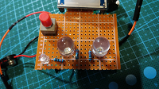

报警器模型

继续阅读
从想法到完成作品，一共花了近二十天的时间。这是我打算用来参加学校“星火杯” 比赛的作品，也是我第一个真正意义上的作品。以往都是买套件，买回来之后只需要按照介绍，一个一个元件焊接好 就行了。这一次则有所不同，主要体现在全部由我构思设计，包括硬件和软 件。当然，我也购买了一些模块化配件，这也是因为我的知识水平不够……
从想法到完成作品，一共花了近二十天的时间。这是我打算用来参加学校“星火杯” 比赛的作品，也是我第一个真正意义上的作品。以往都是买套件，买回来之后只需要按照介绍，一个一个元件焊接好 就行了。这一次则有所不同，主要体现在全部由我构思设计，包括硬件和软 件。当然，我也购买了一些模块化配件，这也是因为我的知识水平不够……
这是一个51单片机控制的流水灯。 但是因为我对单片机并不了解，所以 并没有对她进行编程，只是将一堆电子元器件 焊接在了一起。这是我进入大学以来的第一个制作，不得不说做这个就是一个 体力活，重复劳动炒鸡多。好处就是锻炼了我的焊接能力……